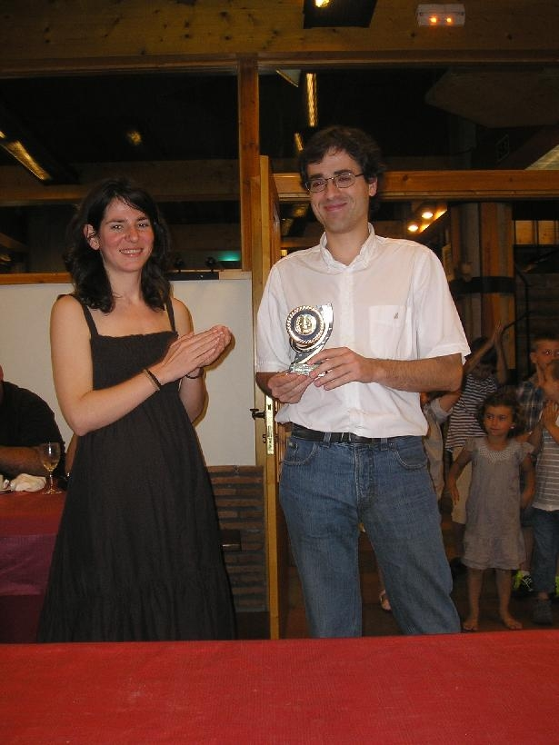
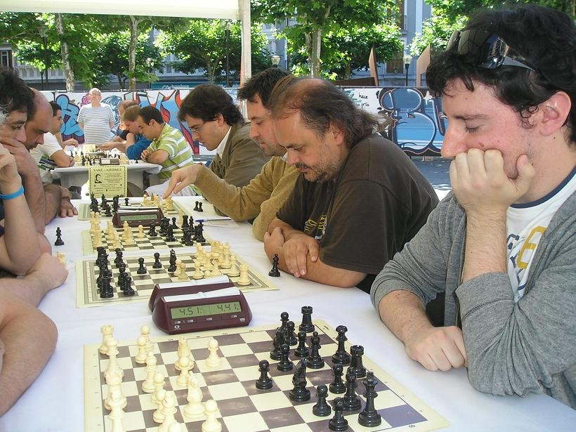

Club de Ajedrez Agustín de Leiza |
| » inicio » socios del club » cto. por equipos » últimos torneos » enlaces |
Pinchetas en Tolosa19-06-2011 Este año también hemos sido invitados a jugar el tradicional torneo San Juanero en Tolosa, así que desde aquí nuestras gracias a la organización. Hasta allí se acercaron Iosu, Claudio, Félix y Aritz, jugando por ese orden, y el torneo fue ligeramente mejor que el año pasado, otra vez fuimos segundos detrás de Fomento pero este año por lo menos Iosu ganó el trofeo al mejor primer tablero.  Este año en vez de los habituales 16 equipos solamente nos juntamos 12, ¿será la crisis?, sin embargo la organización nos dijo que se habían invitado a los mismos equipos de siempre. El torneo se celebró como una liga a una vuelta, y este año por lo menos Fomento no nos pilló dormidos en la primera ronda y empezamos con buen pie, sin embargo nos fuimos “durmiendo” poco a poco y aunque conseguimos el 2º puesto con facilidad Fomento quedó un poco lejos.
Respecto a la actuación en los tableros fue un poco desigual, mientras que Iosu solos se dejó medio punto y Claudio un punto en todo el torneo, tanto Félix como Aritz notaron la falta de pinchetas y se dejaron unos cuantos más, siendo la “rémora” más grande Aritz, que la noche anterior se vio “afectado” por el concierto de Rock en la plaza Navarra.  Pero como siempre en este torneo el día siempre acaba bien el el comedor del hotel Oria donde todos somos superGMs.
|